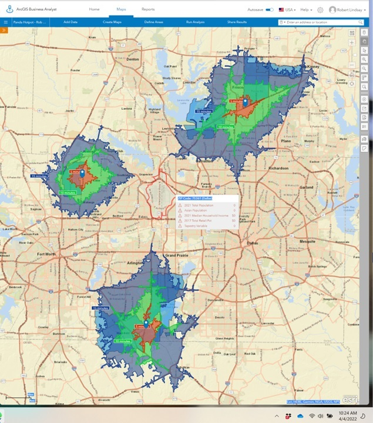
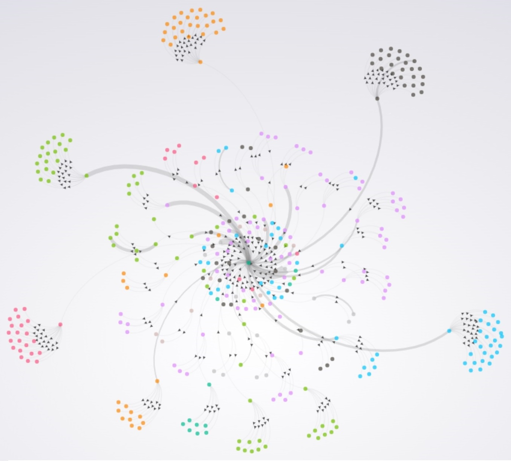
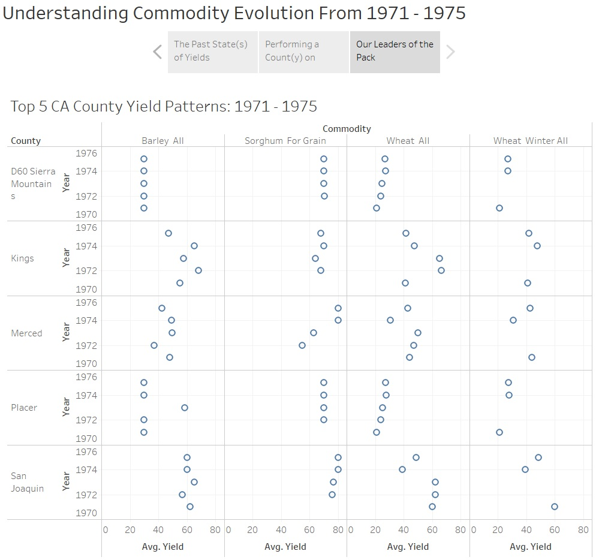
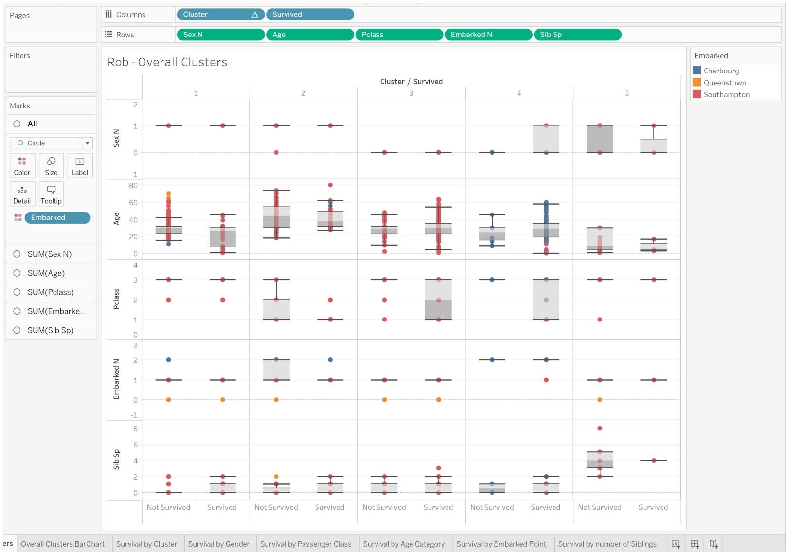
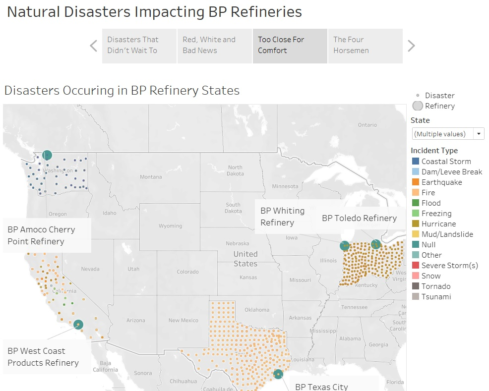
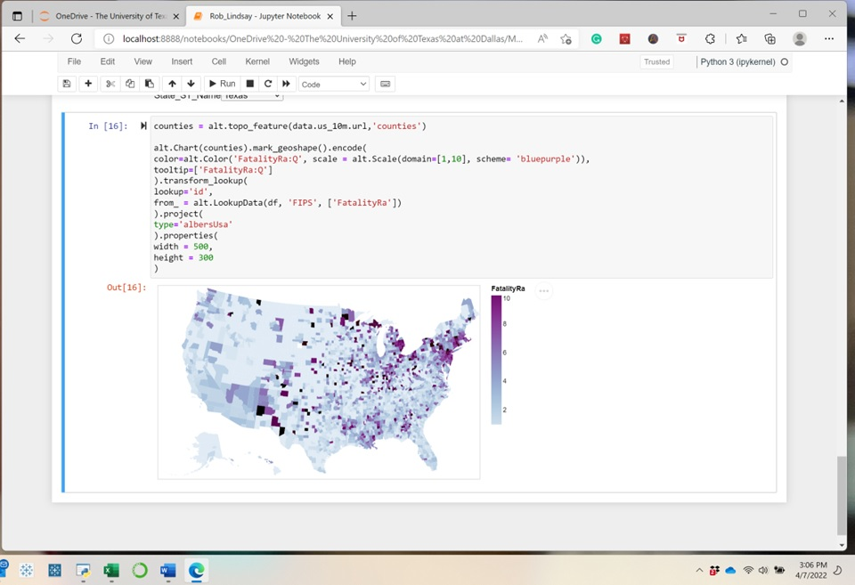
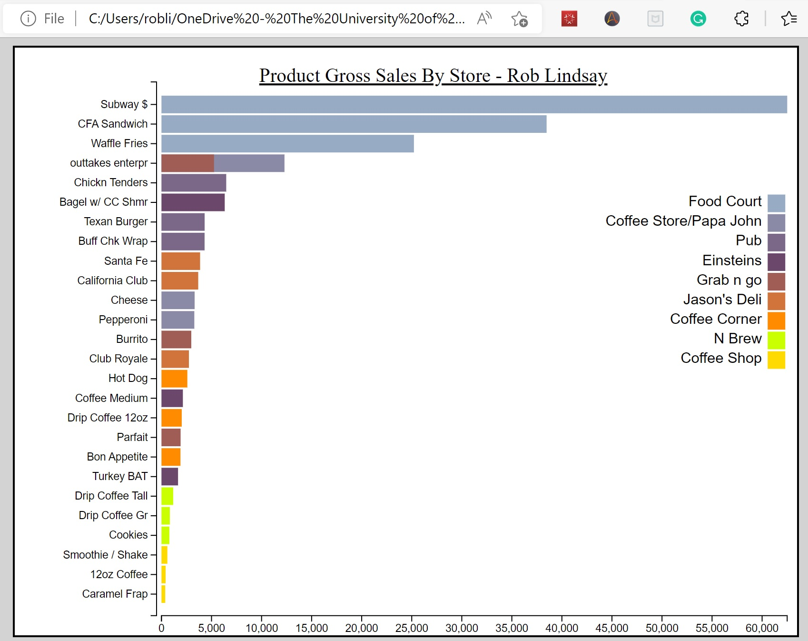

Data Visualization Projects
These are the data vizualisation projects that I worked on during my dual program.
Many of the projects had very specific instructions for how the assignment should be turned in.
As a result, many of the reports may not make complete sense but should still be able to showcase my abilities.

This project utilized ArcGis to perform a Zip Code demographic and drive time analyses to identify 3 ideal locations within the DFW metroplex for a restaurant expansion.

This gephi project explored relationships between links on a website.

Using commodity data, the goals of this assignment were:
1) Recognize that outliers were a result of data entry errors.
2) Use small mutliples to visualize data

Because every data scientist needs to work with the Titanic Data Set at some point, this project created clusters in R which were then integrated into Tableau for various visualizations

Exploration of Top Natural Disasters and how they are relevant to British Patroleum refineries.

Using Instacart data to identify time specific trends in order to craft a marketing recomendation to drive repeat business. Treemaps, combined bar charts, caluclations, segmentation, product lines, this project had a little bit of everything.
Note: the Tableau and data files are so big that I am only providing the exported PowerPoint of the Story from Tableau.

This project primarily used treemaps to visualize the answers to very specific questions for the assignment

This animation project required some data manipulation in python to prepare the data for animation in Power BI. We were also tasked with utilizing Camtasia to record.

Development of interactive plots through the use of the Altair library in Python

HTML implementation through D3 coding